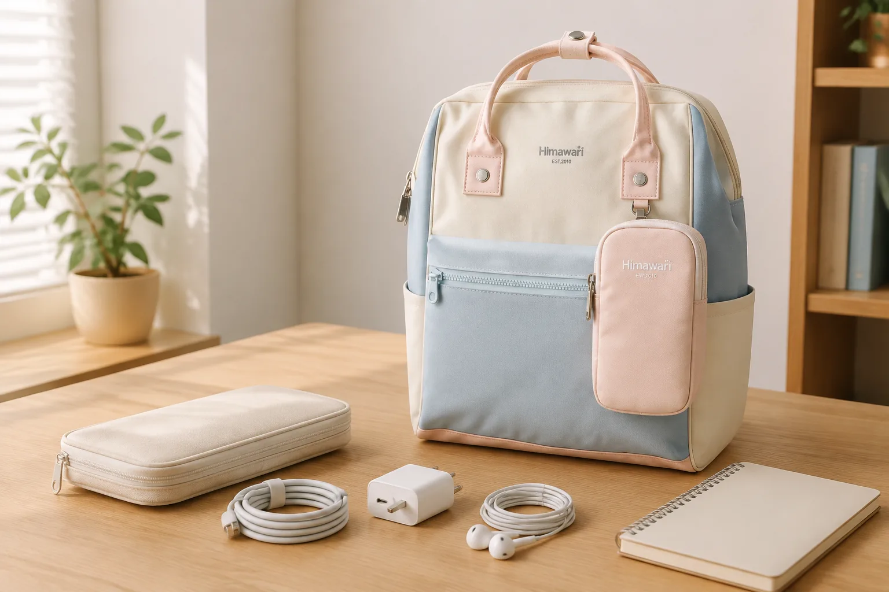
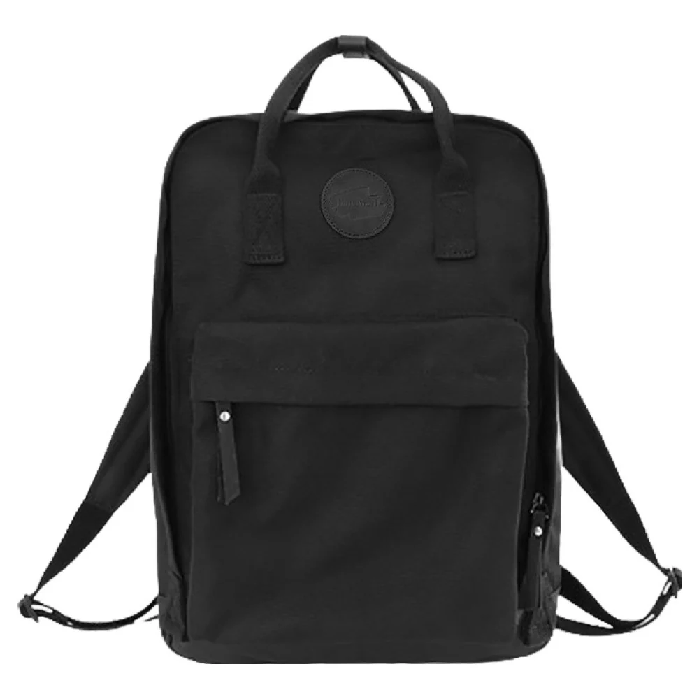

케이블 파우치에서 매일 쓰는 묶음 찾기

케이블 파우치에는 쓰는 물건과 쓰지 않는 물건이 함께 남기 쉽습니다. 예전에 쓰던 기기의 케이블과 가끔 필요한 변환 부품을 그대로 두면 필요한 선 하나를 찾기 위해 전부 펼치게 됩니다. 백팩 속 충전 도구를 정리할 때는 파우치의 칸 수부터 고르기보다 지금 사용하는 기기와 연결할 순간을 봐야 합니다. 매일 꺼내는 묶음과 특정 일정에서만 추가할 묶음을 구분하면 찾을 범위가 좁혀집니다.
먼저 충전기와 케이블, 변환 부품을 한 곳에 펼치고 어떤 기기에서 쓰는지 확인합니다. 형태가 비슷하다는 이유로 서로 대체할 수 있다고 짐작하지 않고 각 기기와 도구의 설명을 대조하세요. 용도를 모르는 물건은 매일 들고 갈 목록에 넣기 전에 정보를 확인할 수 있습니다. 확인된 물건에는 본인이 구분할 수 있는 짧은 표식을 남겨도 됩니다. 표식을 붙이는 방식은 제품의 연결부나 사용을 방해하지 않는 범위여야 합니다.
매일의 묶음과 추가하는 부품
집과 사무실에서 같은 도구를 계속 사용하는지, 이동 중에만 필요한 것이 있는지 생각합니다. 사용 장소가 고정된 도구를 매번 운반할 필요가 있는지도 실제 조건에서 판단할 수 있습니다. 백팩에 꼭 남길 것은 그날의 일정에서 사용할 연결 도구입니다. 가끔 쓰는 부품은 필요할 때 추가할 묶음으로 나누면 일상 파우치가 덜 복잡해집니다. 사용 빈도만으로 버릴 물건을 정하는 대신 운반할 범위와 보관할 범위를 나누는 방식입니다.
자주 쓰는 케이블을 꺼낼 때 충전기를 모두 빼야 한다면 파우치 안의 위치를 바꿔볼 수 있습니다. 한 번 열고 필요한 도구만 찾을 수 있는지 실제로 해보세요. 칸이 많아도 같은 모양의 부품이 깊이 겹쳐 있으면 다시 뒤집게 될 수 있습니다. 손으로 잡을 순서와 돌아갈 위치가 정해져야 사용 뒤에도 구분이 유지됩니다. 빈 파우치의 모양보다 평소 물건을 넣은 상태에서 확인하는 것이 준비하려는 동작과 가깝습니다.
케이블의 보관 형태는 제조사 안내를 기준으로 정합니다. 임의로 아주 작은 모양을 만들거나 연결부를 강하게 접는 방식으로 공간을 줄이기보다 안내된 범위에서 묶을 수 있는지 봅니다. 별도 고정 도구를 쓴다면 사용 방법을 확인하고 단자나 다른 물건을 누르지 않는지 살펴보세요. 정리한 케이블을 찾기 쉽도록 두되 파우치를 닫기 위해 도구를 강하게 눌러야 한다면 구성이나 파우치의 크기를 다시 검토할 수 있습니다.
이번 정리에서 백팩의 실제 예시로 Himawari No.1084H 제품 정보를 참고할 수 있습니다. 케이블 파우치를 어디에 둘지 생각할 때는 노트북이나 파일과 닿는 면도 함께 봅니다. 충전 도구를 찾으려고 다른 짐을 먼저 꺼내야 하는지, 사용한 파우치를 같은 위치로 돌려놓을 수 있는지를 실제 소지품으로 확인하세요. 도구 자체를 정리한 방식과 그 묶음을 가방에서 꺼내는 방식이 이어져야 합니다.

단단한 물건이 닿는 면
충전기와 플러그처럼 형태가 단단한 물건은 케이블과 구분해 위치를 볼 수 있습니다. 작은 파우치에 모았더라도 주변 기기나 안경, 종이와 어떤 면으로 닿는지 확인해야 합니다. 파우치가 보호 성능을 모두 해결해준다고 생각하기보다 묶음의 바깥 모양을 실제로 봅니다. 가방을 메고 내려놓은 뒤 도구가 어느 쪽으로 움직였는지도 확인할 수 있습니다. 빈 공간에 넣었다는 사실과 다른 소지품의 면을 누르지 않는 조건은 별도로 살펴볼 부분입니다.
예를 들어 기기로 작업할 때 케이블과 어댑터를 함께 꺼낸다면 둘을 한 묶음에서 바로 찾을 수 있게 둘 수 있습니다. 가끔만 쓰는 변환 부품은 그 묶음의 다른 위치에 남겨두는 구성도 가능합니다. 이런 구분은 실제로 연결이 가능한 기기와 도구를 확인한 뒤에 정합니다. 연결 규격을 이름만 보고 판단하지 않으면 새 기기로 바꾼 날에도 무엇을 계속 쓸지 구체적으로 확인할 수 있습니다.
작업 자리에서는 꺼낸 물건의 수를 알아두면 정리하기 쉽습니다. 어댑터를 콘센트에 연결하고 케이블을 책상 위에 두었다면 회수할 위치가 둘로 나뉩니다. 기기를 먼저 넣은 뒤 남은 도구를 찾는 방식보다 연결을 해제하고 도구를 제 묶음으로 돌리는 순서를 정해볼 수 있습니다. 공용 공간의 설비 사용은 현장 안내를 따르고, 개인 도구가 다른 사람의 물건과 섞이지 않을 위치에 두면 됩니다.
가방으로 돌아가는 연결 도구
자리를 떠날 때에는 책상 면과 콘센트, 가방 파우치를 함께 봅니다. 케이블 하나가 돌아왔다고 사용한 도구가 모두 회수된 것은 아닐 수 있습니다. 파우치의 빈 위치가 무엇을 뜻하는지 알아볼 수 있는 구성을 정하면 도움이 됩니다. 복잡한 목록을 매번 읽기보다 늘 같이 꺼내는 묶음의 범위를 기억할 수 있게 만드는 것입니다. 별도로 빌린 도구가 있었다면 개인 파우치에 넣지 않고 안내된 방식으로 반환합니다.
도구에 사용 흔적이나 이상이 보인다면 단순한 수납 문제와 구분합니다. 변형이나 손상 등 확인이 필요한 부분은 제조사의 사용 안내나 상담을 통해 판단하고, 파우치를 바꿔 계속 쓰는 것으로 해결하려 하지 않습니다. 보조배터리 등 별도 관리 조건이 있는 제품은 해당 안내에 따라 사용과 보관을 정하세요. 비행기를 이용할 일정이라면 평소 파우치 그대로 가져가기 전에 항공사와 공항의 현재 반입 안내도 확인해야 합니다.
새 기기를 쓰거나 출장 일정이 생긴 날에는 파우치의 묶음을 다시 대조합니다. 기존 도구가 모두 필요한지, 추가할 부품의 역할이 무엇인지 확인한 뒤 필요한 것만 더합니다. 돌아와서는 그 일정에만 쓴 도구를 별도 보관 자리로 옮길 수 있습니다. 파우치가 계속 두꺼워진다면 더 큰 것을 고르기 전에 사용하지 않은 물건이 남아 있는지 봅니다. 실제 연결할 도구와 회수할 위치가 분명하면 백팩 안에서 찾는 범위도 유지하기 쉽습니다.